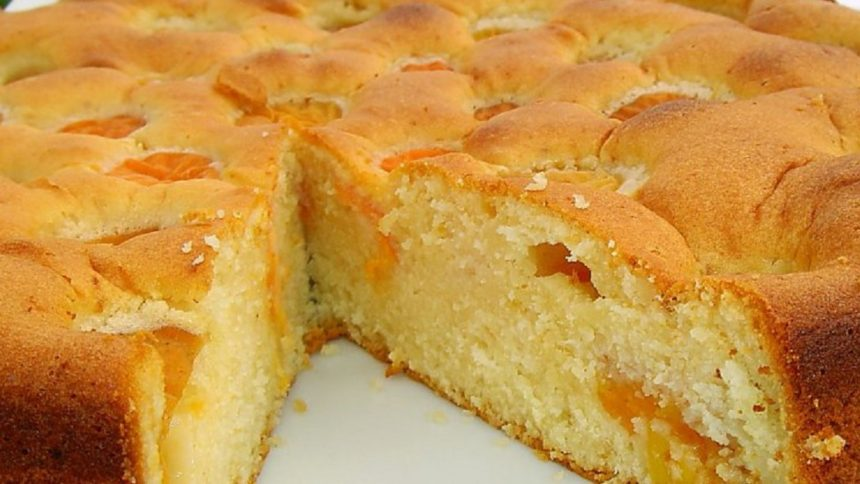

яблучний пиріг
інградієнти і приготування
Тісто: борошно – 500 г. маргарин 250 г., цукор 150-200 г., жовтки – 4 шт., сметана 2 ст. ложки, порошок до печива 2 ч. ложки (або 1 ч. ложка соди) Начинка: почищені яблука 1,5 кг., кориця 1 ч. л., ванільний цукор 1 п., білки 4 шт., цукор 100 г. Спосіб приготування: Пересіваємо муку з порошком до печива. Натираємо до нього маргарин на грубій терці і легко вимішуємо. Збиваємо жовтки з цукром, додаємо їх разом зі сметаною до муки і все вимішуємо ложкою, а потім руками замішуємо тісто. Коли тісто стало еластичним ділимо його на дві частини. Одну частину розкачуємо і кладемо в братванку, встелену пергаментом для випікання. Формуємо з тіста невеликі бортики. Почищені яблука нарізуємо пластинками, пересипаємо корицею і ванільним цукром, викладаємо яблука на тісто. От так мій молодший карапуз мені допомагає куховарити =) От так мій молодший карапуз мені допомагає куховарити =) Збиваємо білки з цукром в густу піну. Викладаємо на яблука. Другу половинку тіста маленькими шматочками відриваємо від основної маси і накриваємо наш пиріг зверху. Як на відео. Можна ще посипати зверху горіхами. Розігріваємо пічку на 125 градусів. Ставимо пиріг та підглядаємо за ним, поки не зарум”яниться. Готовий пиріг можна посипати цукром-пудрою. Смачного! А буде дуже смачно! =))